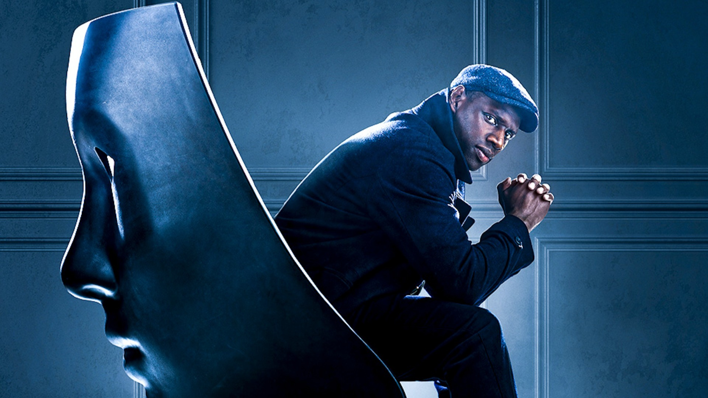
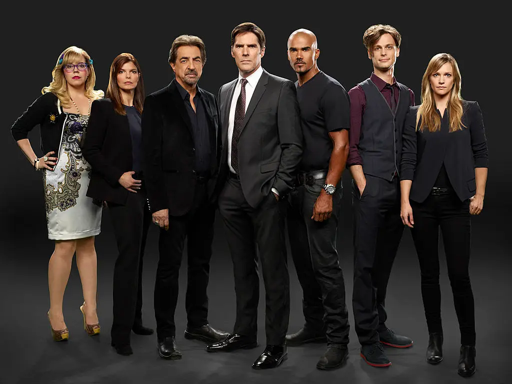
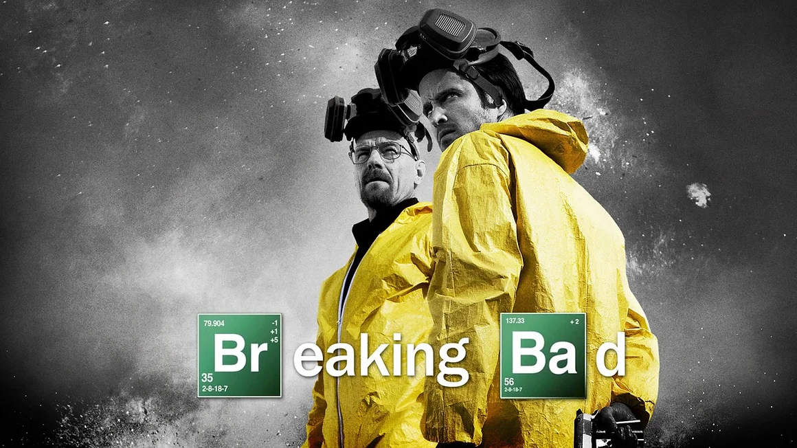

Ragnarök
Na história de Ragnarok, a pequena cidade de Edda sofre com mudanças climáticas drásticas. Assim, com a cidade envenenada
pela poluição e abalada por geleiras derretendo, o fim dos tempos parece estar cada vez mais próximo.
O Adolescente Magne, que é a reencarnação do Deus do Trovão, Thor. Com os poderes do filho de Odin
e com a ajuda de seus amigos, ele tenta resolver os problemas de Edda.
Lupin

Baseada na história de Arsène Lupin, personagem criado pelo escritor Maurice Leblanc,
Lupin é uma série da Netflix que narra a história do ladrão cavalheiro Assane Diop.
Único filho de um imigrante senegalês que mora na França, ele parte em busca de vingança depois
que o pai se matou após ser acusado de roubar uma joia de uma família rica.
Criminal Minds

CriminalMinds é uma série sobre resoluções de casos
sobre a BAU (Behavior Analysis Unit) um esqudrão de
elite do FBI, com sede em Quantico, Virgínia.
BlindSpot

Blindspot centra-se em uma mulher tatuada e misteriosa que foi
encontrada
totalmente nua na Times Square em Nova York após perder a memória
e sem saber a sua própria identidade.
Shooter
Bob Lee Swagger é um ex-fuzileiro naval condecorado que é persuadido a voltar à ação depois que uma
conspiração para matar o presidente é descoberta. Swagger volta ao exílio e se vê envolvido
em uma operação desastrosa com laços com seu passado.
Grey's Anatomy

A série foca na vida de médicos cirurgiões internos, residentes e
atendentes; e como eles evoluem na sua profissão ao tentar manter a
vida
dos seus pacientes e nos seus relacionamentos pessoais.
Breaking Bad

Ela retrata a vida do químico Walter White,
um homem brilhante frustrado em dar aulas para adolescentes
do ensino médio enquanto lida com um filho sofrendo de paralisia cerebral,
uma esposa grávida e dívidas intermináveis.